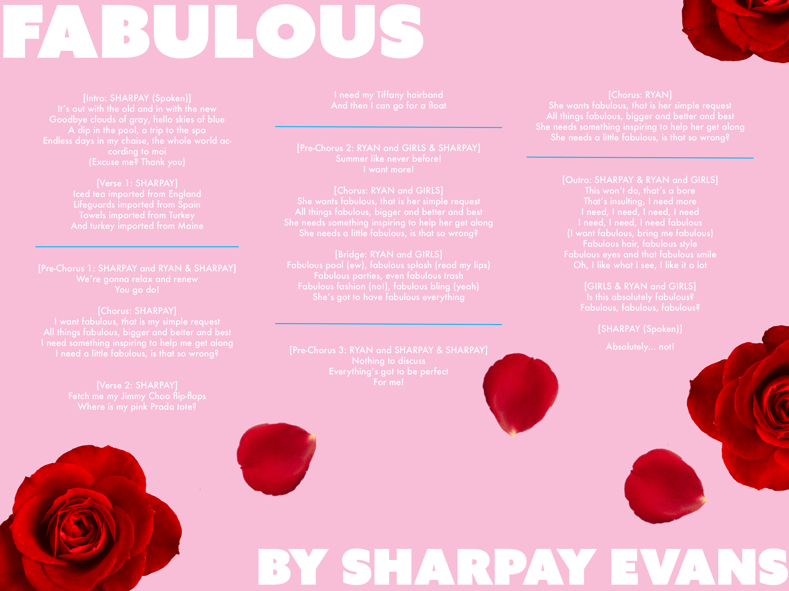

I will change the background color to be a more saturated pink and improve contrast with the lyrics. I will also enlarge the roses to help convey the elaborate over-dramatic aspects of the song. I will also introduce scrolling so I can move the lyrics into a vertical column and utilize more space on the page. I will also change the fonts to be ones found on Google fonts. My planning took place with Maddie Partner, and then with Amy Wang and Sarah Pulvirenti.
